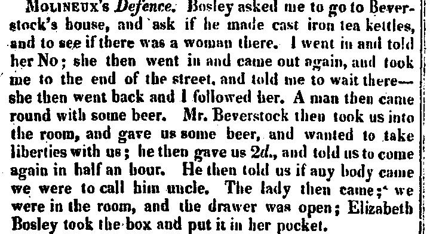
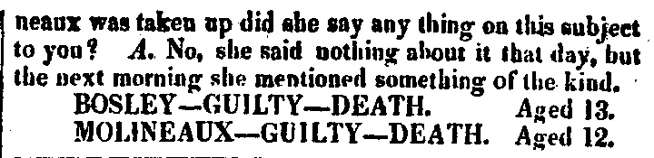
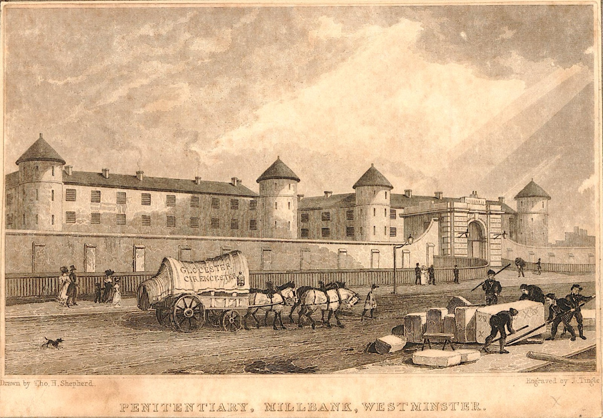

First written down on 2 December 1824, at the Old Bailey, London
Caroline Molineaux
about 1812 to after April 1830
At twelve she was sentenced to death, beside a girl of thirteen, for taking a tin-man’s savings. She spent the rest of her childhood in the Penitentiary at Millbank.
On the afternoon of Tuesday 16 November 1824 two girls came into the shop of Benjamin Beverstock, tin-man and brazier, at 26 Castle Lane, Westminster, and asked for tin plates. He knew the elder, Elizabeth Bosley, who had bought from him before. He knew her parents, and trusted her. The younger was Caroline Molineaux.1
What happened in the next quarter of an hour was told in court twice, and the two tellings do not meet. This is his. He had no plates. He sent Elizabeth to the back shop for charcoal because his fire was low. A lady came in and was a long time choosing stoves and saucepans, and Caroline was in the shop all the while. Then he heard her say, “Come, Betsy, let us go, you know where we have to go,” and the girls left. Afterwards a box was found to be gone from a drawer in the bedroom beside the shop. It had held four sovereigns and a heap of silver, seven pounds nineteen shillings and sixpence in all, which he and his wife “had been collecting towards a bill.”
By half past three both girls were at the Black Horse in York Street. John Brooks, who lived there, heard two girls in the privy “as if they were quarrelling about dividing some money,” broke open the door, and found them with a bundle tied in a silk handkerchief and a blue apron. Caroline said they were things she had got out of pawn for her mother. A shilling lay there, and she said that was her mother’s too. Brooks let Elizabeth go and kept Caroline. It was probably then that Elizabeth went back to the shop, put her hands together and said: “Oh Lord! oh Lord! that girl has robbed you.”
The constable, Benjamin Timbrell, came between four and five. “The moment the girls saw me they knew me,” he said, “and one accused the other of the robbery.” At the watch-house Caroline told him: “Bosley took the money out of the drawer, and she will tell you so.” Elizabeth said: “Yes, Mr. Timbrell I took it.” He answered: “My good girl you must not say any thing to me.”
They were tried together at the Old Bailey in the session that opened on 2 December. When it was Caroline’s turn to speak she said that Elizabeth had sent her in first, to see whether a woman was there; that a man came round with beer; and then: “Mr. Beverstock then took us into the room, and gave us some beer, and wanted to take liberties with us; he then gave us 2d., and told us to come again in half an hour. He then told us if any body came we were to call him uncle.” The lady came, the drawer was open, and Elizabeth took the box and put it in her pocket.

Beverstock was called back. “I never did—I never gave them 2d., upon my oath—I never attempted to take liberties with either of them.” The constable was asked whether Caroline had said any of this when she was taken. Not that day, he said, “but the next morning she mentioned something of the kind.” The report gives no word from Elizabeth.
I cannot tell which of them was telling the truth, and nor can anyone who was not in that room. What the record shows is that a girl of twelve said it in open court with the man standing there, that she had already said it to a constable the morning after her arrest, and that the court put one question about it to him and one to the constable. Then the jury found both girls guilty.
The money was more than forty shillings and it was taken in a dwelling house, and in 1824 the sentence the law gave for that was death. The report prints it in two lines. A later tally of the Old Bailey’s capital cases notes that neither girl was recommended to mercy in court.2

They were not hanged. By the 1820s most sentences of death for theft were not carried out: the Recorder of London reported the cases to the King in Council, and most were commuted. That is how it went in general. For these two the Recorder’s report is dated 9 February 1825,3 ten weeks after the session opened, and Caroline’s sentence became transportation for life.2 Whether anyone told her, in those ten weeks in Newgate, that she would not hang, the record does not say.
She was not transported either. She and Elizabeth were sent to the General Penitentiary at Millbank, in Westminster, the same part of London they had been arrested in. Its register entered Caroline as twelve years old, received from Newgate.4

She was there for five years, and there is one description of her from all that time. On 24 April 1830 a paper went to the Home Office recommending mercy for a list of the Penitentiary’s prisoners: eight men, then the two girls. I have not seen the paper, only the National Archives’ summary of it, which gives the grounds like this: the two girls “were troublesome children but have been well behaved recently. They have served half their sentences and long confinement will be injurious to them. They have friends willing to receive them.” And then a note: “Free pardons prepared April 1830.”5
If five years was half, the term was ten; I have found no paper that states it. The same summary gives Caroline’s age at her trial as thirteen and Elizabeth’s as eleven, the reverse of what the court printed.
Elizabeth Bosley was freed from Millbank on Monday 31 May 1830.6 I have not found the line that frees Caroline. A Home Office entry book has an entry under her name that I could not open, and that is probably it;7 the pardons were prepared for both. If she left when Elizabeth did she was about eighteen, and had been a prisoner since she was twelve.
“Friends willing to receive them.” In the language of the time the word often meant family. Who they were is not said, and after April 1830 I can find nothing of her at all: no marriage, no burial, no later trial under any spelling of her name.
A Benjamin Beverstock of Westminster, very likely the same man, left a will that was proved on 28 January 1835.8
Her surname is spelled four ways in the indexes, and one list calls her Catherine. Nearly everything she says in the record is repeated by a man giving evidence against her. The defence printed above is the whole of what she is recorded as saying for herself. It is 146 words long.
In dates
- About 1812. Born. In 1824 she speaks of her mother.
- 16 November 1824. Taken at the Black Horse, York Street, Westminster, with Benjamin Beverstock’s money.
- December 1824. Tried at the Old Bailey with Elizabeth Bosley. Both are sentenced to death.
- 9 February 1825. The Recorder’s report. Her sentence becomes transportation for life.
- After February 1825. Received at the General Penitentiary, Millbank, from Newgate.
- 24 April 1830. Recommended for mercy. Free pardons are prepared.
- 31 May 1830. Elizabeth Bosley is freed from Millbank. Caroline’s own release is not found.
Records that are not her
The database that links these records reads four prison index entries as imprisonments in 1812, 1816, 1817 and 1823, which would put her in gaol at birth, at four, at five and at eleven. I have left them out of the life.
- Catherine Molyneaux, aged twenty, in a prison record dated 1812, is another woman.
- The entry dated 1816 is the Millbank register itself. The date is the year the volume begins, and it gives her age as twelve.
- The entry dated 1817, also giving her age as twelve, is probably the same kind of thing.
- The entry dated 1823, Caroline Molineux aged thirteen, is doubtful. It may be another volume date. It may also be a real earlier imprisonment: the constable said the girls knew him.
Not yet known
- When she left Millbank. The entry freeing Elizabeth Bosley is in HO 13/55 at page 325, and Caroline’s should be near it.
- What the Millbank register says of her: her parish, her parents, her conduct.
- Who the friends were who were willing to receive her. The paper itself, HO 17/103/136, may name them.
- Whether she had been in prison in 1823.
- Her baptism, between about 1810 and 1813, probably in Westminster, and her mother’s name.
- What became of her after 1830: a marriage or a burial under Molineaux, Molineux or Molyneux.
- What became of Elizabeth Bosley.
- Whether anything else is recorded, for or against, about what she said of Benjamin Beverstock.
Everyone named here
- Elizabeth Bosley, thirteen in 1824, tried and sentenced to death with Caroline Molineaux, and freed from Millbank on 31 May 1830.
- Benjamin Beverstock, tin-man and brazier, of 26 Castle Lane, Westminster, whose money was taken in 1824.
- John Brooks, of the Black Horse, York Street, Westminster, who found the girls.
- Benjamin Timbrell, constable, who took the girls to the watch-house in 1824.
- Lord Skelmersdale, named on the 1830 recommendation from the General Penitentiary.
If this is your family
If Caroline Molineaux, or anyone named on this page, belongs to your family, the library would like to know what the family remembers: a story, a photograph, a name written in a Bible. It will be kept here beside what the records say, and marked as memory.
Written by Claude, an AI made by Anthropic, on 20 November 2026, from transcriptions of the records. No person has yet checked it against the original documents. Correct this life, or check it against the originals.